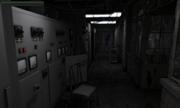
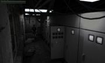
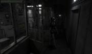
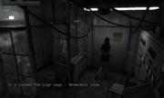
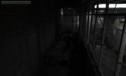
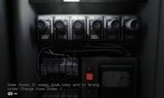
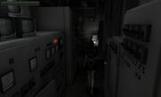

Infested : a survival horror and investigation game
Dave82
Hi everyone . i’m working on a game for a long time now (5-6 months in my spare time) , and i thought maybe i should post it’s current state. First of all few words about the game :
Infested is a survival horror and investigation game where you have to solve some cool puzzles, and collect clues.Actually if you liked the OLD Resident Evil games (RE2 , RE3 , Code Veronica) then you’ll probably like this one too.
The story in nuthshell : Scientists made a great leap in quantum physics , they discovered a way to open portals to paralell universes , but the experiment went horribly wrong… the rules of space and time became all scrambled and some evil creatures invaded our side. Your mission is to close the portal and save the world…
Some differences between Resident evil and Infested :
-TPS camera view instead of fixed cam angle.
Puzzles are dynamic.While in RE they are just 2d sprites in infested they are interactive 3d objects (Rotate valve handles by dragging them or pressing switches etc)
TikariSakari
The video looked really cool, and you’ve managed to build quite a big world in half a year. Something that caught my eye on the video was when you picked up an item, you had to move the mouse to the confirm button. I think a lot of new games use some activate button like E or F for confirming their action to make it a bit easier for the player. You might have something like that already implemented, but just thought bringing it up. I also liked how the cross hair changed to hand on things that you could pick up or use like doors.
Good luck with the project in the future.
codingmonkey
It is very impressive
And how did you create this transition between two scenes? when doors opened… black screen… and we see new room (scene)
Mike
Looks great
sabotage3d
Looks amazing Would you reveal some of the techniques that you used ?
rasteron
Looking good so far and great job on the gameplay elements. Your demo scene and mentioning ‘evil creatures’ reminds me of the game Alan Wake though.
As for improving the video quality, try the ff:
-MPEG4 (DivX, Xvid, H.264) format
-1280x720 resolution or 1080p
-128k Mono or 320k Stereo MP3/AAC audio
-24,25 or 30 frames per second
If you have NVidia card then just use ShadowPlay.
Keep it up!
thebluefish
Hot damn, looking good so far!
gwald
Very impressive! :mrgreen:
weitjong
Amazing. After watching the video to the end at full screen, it did not give me a slightest motion sickness. i.e. you have done a great job at adjusting the FOV or something. Are you also the one who create those game assets? They look believable.
Dave82
Thanks for everyone
Well i’ve just thought the same thing and yes you are right i will change that…
Ofcourse !
[quote=“codingmonkey”]It is very impressive
And how did you create this transition between two scenes? when doors opened… black screen… and we see new room (scene)[/quote]
It’s very simple.At segment change i just release all the resources in the current segment and load the new one.It is extremely fast and ensures you can have literally unlimited levels. Most of the entities are derived from Urho3D::Node
So this way i can do recursive things in the scene (destroying resources recursively or load them)
I have a base class called INFNode which is derived from Urho3D::Node and has few virtual methods like :
// Loads this node’s static data from a file
virtual void onInitialize(Urho3D::File &fie);
// Builds this node (called when player enters in the segment)
virtual void onBuild();
// Destroys everything associated with this node but keeps the node “alive”
virtual void onDestroy();
// called by projectiles in the scene returns true if the projectile should be stopped (destroyed)
virtual bool onBulletHit(float damage, Urho3D::Vector3 &dir, Urho3D::PODVectorUrho3D::RayQueryResult &allResults);
So from this INFNode i have various other node types like :
INFDynamicMesh - holds a StaticModel component which is loaded at onBuild() and destroyed at onDestroy()
INFItem - holds a StaticModel and quatity
etc
and finally i have a INFSegment which simply calls onBuild() onDestroy() onInitialize() on it’s children recursively
Thanks to this technique i have an extremely clean and easy to read code , and its really fast (loading a segment with 37000-38000 poly’s is literally a blink of an eye)
Thanks ! Well it’s the fov and the player’s move speed and i set the character controller’s friction and mass at very low value. Actually setting the friction to 0 and the mass to 0.5 gives by far the best result unfortunately it has some issues that come from physics simulation (very thin objects on the floor like a sheet of a paper can block the player like theres a wall)
Regarding to level design and modelling , yes i did everything myself (except that revolver which is only placeholder for now , but i have already a bunch of weapons ready just need to create animations for them)
weitjong
Great! In that case I suppose there is no issue to republish those screenshots and video clips to our main website then.
Bananaft
I was about to ask you about assets origin. Really impressive work.
I hope, that you don’t make collision mesh for every sheet of paper on the floor.
What is your lighting solution?
Now, add some spooky ambient sounds. And keep on the great work!
Dave82
Actually that would be really cool (all assets are made by me including the models and textures and sound effects so there’s no problem at all)
[quote=“Bananaft”]
I hope, that you don’t make collision mesh for every sheet of paper on the floor.
What is your lighting solution?
Now, add some spooky ambient sounds. And keep on the great work![/quote]
Some meshes have collision , some not… like tree leafs , grass , has no collision bodies but other things have. I render the whole scene in bigest chunks thats possible. I presort everything by material before export. So i don’t want to create separate StaticModels for decals on the floor because that icreases the draw calls and material changes.
Currently the game runs constantly on 190-200 fps (thats the max fps as i get the same with empty scene) so the performance is really really great.
I use combination of baked AO + GI and dynamic lighting. The static scene use Baked lightmaps the dynamic meshes use Dynamic lighting.
Actually i would give my left ball if someone could come up with an idea how to implement subtractive shadows… I have some ideas but i didn’t get into Urho source that much yet…
cadaver
Looking very professional, great work!
umen
Amazing work ,
Can you tell us how do you model, that is what is your tricks to make such good textures and human models and animations of the hero? which 3d app you are using ?
How about time management ?how do you handle that ? (you said its in your spare time ).
also you can build small demo and we can test it if you like .
Lumak
I agree with everyone here, this looks amazing. Damn, I should learn how to create art assets… my current skills are limited to only being able to create gui buttons, and bad ones at that.
Dave82
Hi everyone , just few screenshots and some news :
added water and particles
Have different footstep effects on different materials ,
walking in water will spawn some splash particles at each step… looks really cool .
Started to write the first puzzle (i already have few for testing but this will be implemented in the game)
Before i release the first demo i want to improve the character controller… the current controller is a bit bugy in certain situations but i have a way beter idea that i just need to implement (to determine the isOnGround and canJump states i will use raycasting instead of collision check… should work better)
The sewers :
what a cool place to fight monsters… don’t you think ?
Sewer…
Fire :
codingmonkey
what a cool place to fight monsters…
i don’t know exactly but i guess you need to work with some of common scary place or “fear factors”:
dark, silent, wet, cold, big place - wind sound, noise sounds( old wood sound, regular single metal sound from far ) …
gwald
[quote=“Dave82”]The sewers :
what a cool place to fight monsters… don’t you think ?[/quote]
Yes, Yes I do think it’s scary!
[quote]i don’t know exactly but i guess you need to work with some of common scary place or “fear factors”:
dark, silent, wet, cold, big place - wind sound, noise sounds( old wood sound, regular single metal sound from far ) …[/quote]
There will be a lot of dark places.This is only 0.01% of the whole game world.Your first objective is to start the locomotive on the train station and go to the city.
There will be 3 levels.
1 the train station. (starts with an animation of the hero calling his wiife and waiting for the train.After he fells asleep and wakes up that people are disappeared , and some strange disturbing unexpected things happening , like giant planets appears disappears on the sky radnomly , creepy quantum events , houses cut in half , etc)
2 The city.(when you arrive the night will fall so you can expect dark areas after the train station part) Classic scenes like the hospital , mall , airport
3 The labs (typical experiment rooms and stuff)
Hovewer there will be a lot of enemies i still want to focus on puzzle solving and story.I don’t want to make an action TPS.
I don’t get that part…
gwald
[quote=“Dave82”]
I don’t get that part… [/quote]
Watch the video, it’s scary!
Dave82
Some test. Now the scripting works as i expected , so what i need now is adding enemies more models and levels and animations and lots of puzzles and investigation stuff.(Well it’s not piece of cake thats for sure )
This demos shows the 3d sound effects , particles , and puzzle solving.
And i (hopefully “we” as a friend of mine will also work on the game mostly on story writing and possibly scripting (he’s a H.P Lovecraft fan so… i expect a really great story ) ) setup a facebook page
And also a small change in the story.We will switch to a “zombie virus outbreak” instead of the “paralell universe” storyline. Simply because there are more potential in it and way more ideas and enemies to work with.
The gameplay and character however remain the same.
codingmonkey
cool!) do you planning add some sort of idle animation for character? I see what he absolutely freezes when he it stay on place and when you open “quest” things.
Dave82
Hi everyone ! I added FPS mode and it works quite nice ! It adds more to game experience and the gameplay is more fluent.I like it more than the TPS mode.
EDIT : Modified the weapon and the hands a bit :
Dave82
ALMOST READY FOR A DEMO !!!
Added more convenient inventory system
Worked on weapon and hand animations
Unfortunately i’m still busy with life so the development still goes slow… Working on levels… added some dark areas
Lumak
It’s great that your game is really coming along. Looks great.
I haven’t read all the posts in this thread and it might have been asked already, but your sky - do you use some type of cloud system?
Dave82
[quote=“Lumak”]It’s great that your game is really coming along. Looks great.
I haven’t read all the posts in this thread and it might have been asked already, but your sky - do you use some type of cloud system?[/quote]
Hi thanks Lumak ! And nope no cloud system is used , it is a simple skybox.
Lumak
Nice, it looks like 3D clouds. Is it hand painted or generated with some type of tool?
Dave82
[quote=“Lumak”][quote=“Dave82”]
Hi thanks Lumak ! And nope no cloud system is used , it is a simple skybox.
[/quote]
Nice, it looks like 3D clouds. Is it hand painted or generated with some type of tool?[/quote]
Sorry for the late post… I found this skybox on some free site somewhere by searching for “free skybox textures”
Lumak
Ok, cool, found some nice images doing the search. Thank you.
Dave82
Creepy zombified doll attacks the player
I wish i could have more spare time…
Dave82
Finished the main character.Looks way better and the color of the clothes fits better in the environment color. it works nice with darker and brighter segments too.It doesn’t pop put like the old character.The character was created with Makehuman (an awesome open source character generator).You still need lots of work to reduce , optimize and modify the character to make it usable in a game but still it’s a great tool.
hdunderscore
As others have said, very impressive ! Hard to believe it was done solo in such a short time
Dave82
Thanks ! Unfortunatelly polishing and designing takes a lot of time.I finished the complete “pseudo design” of the whole level and now i need to make extreme amount of models and details… But i love it
16:9 resolution test. The gui adapts itself to all resolutions.
Also the hud is now fully functional (health and infection bar both decreases if player takes hit and lerps to red color)
Dave82
Changed the animations , now looks way better.(the scene here uses ultra low lightmaps so sorry for the lightmapping artifacts)
finished the “MoviePlayer” class , which plays skinned and transform animations together for cutscenes.Tested it with some mocap animations and looks cool.
Dave82
Just a small test of cutscene player.The doll’s animation is a bit jerky but that’s what i have right now
I like alpha mask way better than transparent meshes ! So much opportunity and its out of box solution. Even combined it with lightmaps and works great.
I made textures and lighting darker and desaturated everything a bit.Designing Resident evil style puzzle solving levels is way more harder than i thought… I worked mostly on FPS and tps levels which are lot easier to design.
vegetation (constant ambient / no lightmaps)
Girders (Alpha mask + lightmap)
Bluemoon
I’ve been seriously hunting for how to use alpha mask
abcjjy
I am an indie developer too. It is incredible to make such a demo in 6 months by just one developer. That’s mazing!
I’m quite curious about how you make this. How much effort is spent on the art? And how much is spent on coding? Do you use Urho3d exclusively? AFAIK urho3d’s editor is not strong enough, did you invent something specialized editor for your game? What 3d modeling and animation software do you use? Human animation is quite difficult, did you use motion capture solution? It’s not usual to see a developer with strong coding, modeling and animation skills. Awesome!
By the way, I think you can put your demo to kickstarter for more support.
Dave82
Thanks !
Well i started the project in 2014 october. My first choice was Irrlicht (i didn’t heard about Urho3D back then).Unfortunately after a short period of time i realized i will have trouble with it… I had to write everything from scratch.In few months i had sucessfully implemented the :
Sound (DirectSound or Audiere)
Particle Engine (SPARK2)
Navigation Mesh (My own code from scratch using stdlib only)
Scripting (My own code using stdlib only)
Gui (My own code using Irrlicht’s 2d drawing functions and a INFElement2d base class.Similar to Urho’s UI except the quad vertex/index buffers were allocated dynamically so there was no batching.Actually it was quite primitive but it worked pretty well.I had checkboxes , buttons , tabs)
After everything was in alpha state i threw together the fundamentals of the game engine itself to test it.
Well it was very dissapointing… Without offending anyone , Irrlicht was a nice library in 2003… but the lack of modern Hardware support literrally killed the whole project.The worst part was the Skinning which ran on CPU.It was extremely slow… With 5 enemies and with ultra low resolution shadow mapping i had around 30 fps… It was dreadful. Also the built in stencil shadow was ultra slow and useless XEffects was a bit faster but had some issues with the OGL driver.In paralell i started to write a scene exporter for 3ds max which worked perfectly (and still does… i’m using it for Urho) .
So after a lot of struggling : Finding out audiere is linux and window only , SPARK2 was abandoned , NavMesh needed extra features (Offmesh connections , Extra optimisations for dinamic objects , etc) , lack of proper shadow mapping , lack of hardwareSkinning , hardware instancing , No xml support for gui (it was PITA designing GUI from c++) i just abandoned the whole project because it was too much for one developer… Not to mention the code i wrote was huge , and was really hard to have all that giant chunk of code under control…in the meantime various depressing posts have showed up in the irrlicht forums with titles such as “Is irrlicht Dead?” “Is irrlicht outdated?”… So i just put the project on the shelf and wait until i find some other engine. And i did !! In 2015 i found Urho3D.After i tested it i fell in love with it immediately ! It was a fast modern GAME engine with all feateures i need , it was open source and it was extremely easy to setup and use.
So i had to code everything from scratch but this time i could work on the game itself rather than writing a whole game engine from scratch which is a bad idea if you work alone … At this point i had 0 models/levels/textures/sounds ready so i had to start to design levels and make textures.
Most of the time i use 3ds max.I’m using it at least 10 years now , so i feel really home in it’s interface. For textures i use Photoshop , GIMP , and in some rare cases CorelDRAW.
For the animations i use 3ds max and most of the animations are made by hand (once i worked on a small fighting game so i have some experience with hand made animations) But for cutscenes i use Motion Capture (There are tons of them for free.Unfortunately most of them are dirty so you have to clean them first to eliminate twitching but after that they look quite nice)
So thats the story of the game in nuthshell i had to code it twice but this time i will finish it , thanks to the wonderful Urho3D !
Well i thought about that , and maybe once i reach some of the important milestones i will ! Actually this supposed to be a fangame so i think it fits more in crowd funding area rather than selling it on steam.
Hi ! Well it is just a standard material with a *AlphaMask technique.Since it is a fake transparency and can be rendered as a normal material , all your sorting/overlapping headaches will disappear once you start using it Define LIGHTMAP in the technique and put lightmap in emissive unit and voila you have lightmapped alpha mask
Dave82
Finally tested the dynamic light + static lightmaps combinations.AND WORKS BEAUTIFULLY !
The issue mentioned here : topic1105.html
The problem is that lights are additive so baked lighting will become extremely bright if one more additive pass is applied (dynamic lights).The solution is to bake the indirect lighting only and use dynamic lights for direct lighting.The result is awesome :
Lumak
Awesome job blending dynamic and static lighting - these new images look great! Personally, I thought the previous posted images looked a bit dark, and now, wow the difference is night and day.
Cpl.Bator
Awesome ! did you plan to release a single demo ? and can you speak about your workflow ?
Thanks !
Dave82
[quote=“Cpl.Bator”]Awesome ! did you plan to release a single demo ? and can you speak about your workflow ?
Thanks ![/quote]
Hi ! Thanks ! Yes i plan to release a demo as soon as possible.Unfortunately i’m busy with life but If you have a question don’t hesitate to ask.I will answer ASAP.
Dave82
Just some shots to show you i’m still working on it
Dave82
**The imgaes were too big so i removed them ***
Lumak
Nice! Your game looks so polished, are you near Beta release anytime soon?
Dave82
Thanks ! I hope so ! The problem is i have only few hours of spare time in a week.I have a small company (not programming related) where i have some trouble right now so i’m just runnig place to place to fix things , and when i get home i’m just too tired to do anything else than start watching 10 minutes of some 80’s slasher movie and fall asleep…
Everything is 90 % ready , for an alpha release just need few animations and models to be done.
Lumak
Nice. I’m looking forward to the release. Completing the last 10% has always been more stressful than the first 90%
Dave82
Hi everyone ! I just made an update to the game.Adding new features and making everything more smooth.Here are the new features :
Female character with cool textures (found it on the internet it was really hard to rig it as it comes with very awkward pose )
New better item pick up and inventory dialog (it uses only the keyboard to select/pick up items.The mouse interaction was removed , now is way more convenient)
New animations.More smooth and better transitions.(Zombies are still choppy but thatt next thing i will working on)
12 New zombie models from an old TGC model pack.(They look tolerable).Whats cool there are 2 texture variations for each model and the models are only 6000 polys each
Some internal changes that makes the further development a lot easier (cleanup , simplifying some code ,etc)
Added billboards for simulating fog , dust and other cool effects.
Started rebuild lightmaps for segments (Instead of baked complete lightmaps i render only indirect lighting and AO and use dynamic lights for direct lighting and dynamic shadows).You can see this feature in the demo video BTW
The only problem that i didn’t checked my fraps settings and i recorded half size screen again… The videoended up in a terrible 380p quality but i just don’t have patience/time right now to record another one so sorry about this but i promise next time i will upload a proper 720p hq video.
EDIT : Sorry for the spelling errors in the video…
Damn, I thought it was iron-man with that light coming from her chest Looks nice so far.
Dave82
Few shots of the classic Resident evil “fixed security camera” camera style.This gives some real retro survival horror feeling Since this is just a modified version of the TPS character controller , it will be a selectable mode in the main menu
And finally a flashlight idea (the beam is currently photoshopped…)
Dave82
Hi all ! I didn’t post a comment in the new forum yet so it’s about time to do it .Anyway… i have some spare time so i continue to expand the sewer and train station levels of the game. Here are few shots >
hdunderscore
It’s always very cool to see this project progressing ! Great work on keeping up the level of quality over time
Dave82
Hi ! After my HDD , GPU and Power supply wrecked , i’m back with a youthful enthusiasm and a new PC
With new compilers and operating system i found out there is a bug in the game (Some bad resource handling somewhere) which causes random crashes.On XP it was very rare so i couldn’t track it down but on win7 is more frequent so i already isolated the bug i just need to find the exact piece of code which causes the crash
My other problem i mentioned somewhere above is also solved.–>The textures <–Finding specific textures on the net , and editing them to match to each other (contrast , colorkey , saturation ,etc) is a really , really slow procedure.I waste a vast amount of time on this and it gets me nowhere really. So i wrote a small desturation shader which desaturates the screen by 60%.This makes all the textures match to each other automatically and gives the levels more creepy horroristic look.Here are some screen shots (compare them to my the older images to see the difference)
Exterior scene .It looks great even wothout GI lightmap ! (Simple dynamic directional light is used)
Victor
Wow, that’s looking good!
slapin
Yay!!! Cool!!!
Do you use custom shaders for human skin?
Dave82
@Victor : Thanks
@Slapin : Nope , it’s just a simple diffuse material but i plan to add some cool shiny specular map for the clothes.
slapin
Looking forward to it!
Dave82
Just removed the eyelashes and other unnecessary “details” that were rather pesky than visually appealing and guess what.She turnet out to be a real hottie
Dave82
Finally ! The game works and looks as i expected.just need more level design , textures and models and animations
I also created a desaturation/contrast/brigtness combo sahder which acts as a cheap color grading effect. (Note the greenish effect in the video).Also logic , triggers , animations (mocap ,and simple frame based graph transforms) , pathfinding is done.Modified the main hero’s animations (without weapon and flashlight the runing and walking is a cleaned mocap , with weapon and flashlight is generated) The Inventory and other UI based thingies are also work.Here’s a short video of all this put together.
(NOTE : Before you ask , No , the monster in the video is not a l4d tank.Its a very similar monster from a model pack)
Modanung
Looking really good!
Careful with those high heels on that grate.
Dave82
Playing with lightmaps.Tried a different method and it worked really nice ! Photometric lights can produce extremely beautiful results.Also testing the old Resident Evil style character controller (fixed camera angle and position while the character moves freely in the scene) Works and feels better than the default TPS controller.Watch the blob shadow under the character’s feet 
Dave82
Resident evil style gameplay. Pre rendered backgrounds. It really looks like a resident evil clone but i can say that this camera style and gameplay is MIND BLOWINGLY awesome. It’s the best controller type so far. The slow gameplay and the smaller areas give a REAL survival horror experience and makes you want to play more ! With the tps and fps controllers i used before never had this kind of experience. They demanded action.Lot of shooting , large levels , fast runing and made you forget that you actually playing a survival horror game.They just didn’t fit…
A small demo of a simple corridor thrown together for testing.
Dave82
Added AO map to the character diffuse and use a cheap light effect to make the character fit in the scene regardless of light intensity.So far if the area was too dark the character would be completely black or really stand out due to incorrect ambient lighting.I use a constant directional light which always has the same direction as the camera so the character is always lit from a direction even if there is no light source nearby.
No light source (only constant directional) + ambient and the character still looks cool. Oh, and the AO is doing a great job too.
Dave82
After a hell of a work i was able to convert mixamo animations to max bipeds and tested on a model which is not anatomically correct but is a real game character so it looks and feels better than the makehuman version. Yet another lesson learned : if you want quality you’ll need to involve commercial software (IClone or Fuse) to have the job done. (unless you’re not a pro character modeller and unwrapper which i’m not)
So here is a test of it :
Leith
Love your work! Also, nice model!
I see you’re using a dynamic character controller with no foot slipping solver… There’s a bit of foot slipping happening during locomotion.
That’s an issue I spent a lot of time solving, both for dynamic and kinematic controllers. If you want to pick my brain any time, feel free.
Dave82
Today i added a new inventory to the game but the real improvement is that i can now mix 3d scenes with 2d UI elements without RTT ! Now any material type is allowed to be displayed in the inventory. And finally i am starting to understand how the render path works (not there yet but a lot closer) so i was able to figure out a solution for a custom depth map in the render procedure… Theoretically it will be very easy to do
So here are a demo of the inventory :
Dave82
Hi ! I was finally able to put all the achievements together. All features are included in this video. Dynamic shadows , custom z depth pass , scripted ai (unfortunatelly attack animations are missing so no matter how hungry those zombies are they can’t do much )
The new level design is also cool. I think at some point it even looks better than overcomplicated materials and light calculations. Puzzles are working. No need for c++ coding anymore all puzzles and enemy AIs can be scripted in AS with no extra hassle.
Watch the video in fullscreen. For maximum resolution and clearness
Never been so close to release the first demo !
Regards
George1
This need to be on the WIP front screen of the website.
For water splash, maybe reduce the intensity of the splash based on speed.
Modanung
Looking good!
I noticed the blood is very dark, you could try making it slightly emissive. This worked for me in heXon.
…or even better, make it some awesomely translucent custom shader.
GodMan
Reminds me of a cross between Resident Evil and Silent Hill.
Dave82
Finished the main menu and the combat system. The combat system needs a bit tweaking (turning should be smoother) but otherwise it works like i imagined. The same logic should be used for all enemies in the game. (it is very similar how it was done in Resident evil games). Also the point light shadow caster is looks way better than the previous directional shadow caster. You can see the long distorted shadows which adds more to the horror atmosphere.
Looking great. Your gun fire/spark comes out a bit late, should be just before the smoke.
JSandusky
Looks pretty amazing.
johnnycable
That’s great. It reminds me of goo’ol alone in the dark, the original one (ninety something); fixed cameras, nifty atmosphere…
Graphically very good. Looks gorgeous.
“Their” animations feels ok, but I’d polish them some more.
And twist those candles a little.
evolgames
How long have you been working on this? Looks great, and nice to see it coming along.
Dave82
Hehe. These are the best mocap animations you get for free 99% of free mocaps are useless garbage. These took me about 3 weeks to clean and remove the feet and head jiggling as much as possible . I found some cool free (creative Commons) models (include ornate candlesticks) sketchfab so i will probably replace some of them in the future.
Well i started it long time ago. 3-4 years or more. In the beginning i had more time to work on it , but now i’m busy with all kind of crap so i work on it when i find some spare time. But i absolutely love working on it even if it goes extremely slow
johnnycable
Not sure… hasn’t Mixamo some zombie-ish anims…?
Dave82
There are few walking and falling but they’re not that great either.
johnnycable
I see… then it’s gore-time again
Dave82
Just a small update and feature demonstration ! Screen acrolling
So testing on different PCs i was facing a huge problem. Since the aspect ratio of the pre rendered backgrounds are fixed we can only display them on monitors with the sam aspect ratio , otherwise the background will be squashed and not that it won’t look good but screen positions on this squashed image are no longer compatible with the 3d perspective view. Eg every 3d element on this bacground will be rendered off. So i implemented a solution the sam way as capcom did it. Render the game to a same virtual resolution as the backgrounds and then scroll this final 2d image on the screen depending where the player is standing. Here is a cool example of it
Notice the scrolling screen every time the player approches the top or the bottom of the screen
Forgot to post here the PBR version of the game. I was able to do exactly the same as in the classic renderpath (prerendered backgrounds + invisible meshes rendered in depth only for receiving shadows)
So now looks so cool ! Too bad i have really no time to work on this right now but i would really like to


 Very impressive! :mrgreen:
Very impressive! :mrgreen:


 .
.


 )
) ) ) setup a facebook page
) ) setup a facebook page


 I’ve been seriously hunting for how to use alpha mask
I’ve been seriously hunting for how to use alpha mask … At this point i had 0 models/levels/textures/sounds ready so i had to start to design levels and make textures.
… At this point i had 0 models/levels/textures/sounds ready so i had to start to design levels and make textures.


 )
)


 .Anyway… i have some spare time so i continue to expand the sewer and train station levels of the game. Here are few shots >
.Anyway… i have some spare time so i continue to expand the sewer and train station levels of the game. Here are few shots >